Column 1
Add a short description for the first video/image.
Current 3D perception models rely on uniform voxel grids that process all regions at the same resolution, leading to massive computational inefficiencies since much of 3D space is empty. Overcoming this bottleneck is critical for real-time applications like autonomous driving, where strict latency constraints demand faster inference without sacrificing vital spatial details.
Inspired by biological foveated vision, we propose a distance-aware, non-uniform tokenization method for 3D voxel transformers. This approach allocates high-resolution tokens to critical, central regions while using coarser representations for distant space, successfully reducing the overall token count while preserving essential geometric detail.
With our best model, we could reduce inference time by about 30% while keeping the decrease in IoU below 3%. This demonstrates that lowering voxel resolution in peripheral regions can cut computation with only a small impact on prediction quality.
Our project introduces a foveated transformer framework for 3D semantic occupancy prediction. In this task, a 3D scene is represented as a voxel grid, and the model predicts whether each voxel is occupied and which semantic class it belongs to. This representation is particularly important for autonomous driving, where accurate and efficient 3D scene understanding is required before downstream planning and decision-making.
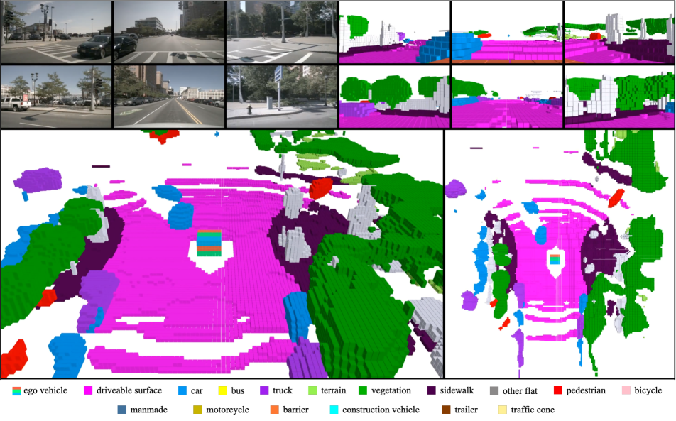
3D occupancy prediction with voxels [Img.1]
A key limitation of standard voxel-based models is that they process the entire 3D volume at a uniform resolution, even though much of the space is empty or less relevantcite. Inspired by biological foveated vision, where the retina provides high acuity near the center of gaze and lower resolution in the peripherycite, we investigate whether a 3D occupancy model can allocate more computation to safety-critical regions while using coarser representations elsewhere.
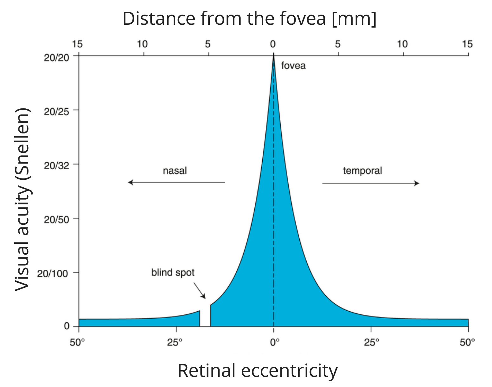
Acuity vs. distance from fovea [Img.2]
Building on VoxDetcite, our work explores foveated mechanisms for improving the efficiency of 3D occupancy prediction. Specifically, we study how distance-aware weighting and non-uniform token allocation can reduce unnecessary computation while preserving detail in regions that are most important for scene understanding.
In the realm of 2D computer vision, foveated mechanisms have been frequently employed to selectively allocate processing power. Models like FoveaTercite proactively identify key areas to analyze at high resolution, leaving peripheral zones at a much coarser level. Other techniques, such as Adaptive Token Samplingcite, dynamically filter out less informative tokens to optimize the computational load on the fly. However, these strategies are primarily designed for 2D token pruning and do not natively adapt the core 3D spatial structures needed for volumetric tasks.
Within 3D perception, the immense computational burden of processing empty space is often mitigated using sparse or multi-scale voxel frameworks. VoxFormercite, for example, utilizes a two-step sparse-to-dense approach that first builds explicit representations only for visible voxels, relying on a transformer to hallucinate the rest of the unseen scene. Similarly, geometry-aware voxel modelscite attempt to constrain attention mechanisms to structurally relevant regions. Although these techniques successfully lower the number of actively computed voxels, their underlying voxelization grids remain structurally rigid at each network stage, ultimately requiring a fully dense decoder for final predictions.
Our work departs from these standard paradigms by embedding a bio-inspired, foveated tokenization directly into the foundational voxel geometry of the VoxDetcite architecture. Rather than just masking out uninformative tokens or relying solely on sparse convolutions, we actively warp the spatial resolution using a non-uniform sampling strategy based on a voxel's distance from the ego-vehicle.
Ultimately, whereas existing literature largely concentrates on pruning techniques or sparse attention maps in later network stages, our method natively integrates distance-aware adaptivity directly into the 3D voxel extraction and cross-attention phases. This yields a spatially structured, highly efficient framework for semantic occupancy prediction without needing to alter the dense downstream classification pipeline.
To establish our baseline, we utilized the VoxDetcite architecture. Originally, VoxDet frames occupancy prediction as an instance-centric problem featuring both a semantic branch and an instance-level regression branch (which predicts a 4D offset field). To obtain a clean baseline for our foveated modifications, we simplified the architecture by entirely removing the instance-level regression branch, allowing us to focus exclusively on semantic occupancy. Our experimental pipeline was built around the SemanticKITTIcite and KITTI Vision Benchmarkcite datasets, processed and executed on the EPFL cluster.
In this simplified baseline, the 3D feature extraction pipeline relies on two main components that process data uniformly: a dense 3D voxel backbone and a deformable cross-attention module. First, a local 3D aggregator (built using 3D convolutions, acting as a UNet-style encoder) processes the full 3D volume at a uniform, high resolution to extract geometric features. Then, a cross-attention head uses every voxel in the dense 3D grid as an individual query token to retrieve corresponding features from the lifted 2D images. In this baseline setup, the final training objective consists of three terms: a geometric scaling loss and a semantic scaling loss (which act as global regularizers), and a standard voxel-wise cross-entropy (CE) loss that supervises each voxel independently.
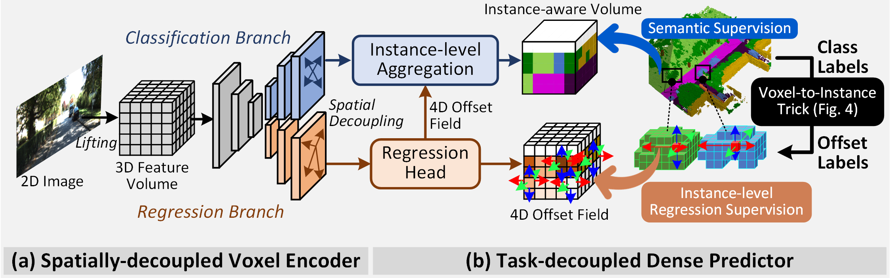
VoxDet architecture [Img.3]
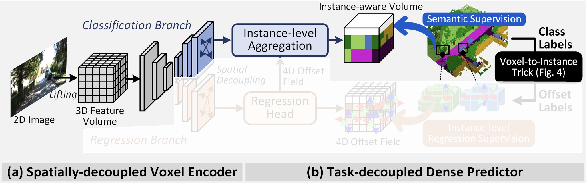
Baseline architecture
Starting from this baseline, our first major modification was replacing the standard voxel-wise CE loss with an Adaptive Forward-Distance Weighted Loss. Because the loss function does not natively receive camera calibration matrices or depth maps, we use the voxel index along the x-axis (the forward direction of the ego-vehicle) as a proxy for distance. As voxel tokens pass through the image-view transformer and the occupancy encoder, the prediction head outputs per-voxel class logits. Before reducing the loss, we apply a dynamically computed multiplicative weight to each voxel's cross-entropy value. Closer voxels receive higher weights, effectively shifting the gradient magnitudes so the optimizer focuses more heavily on updating parameters for near-field, safety-critical regions. To maintain training stability, this weight is clamped to a range of [0.5,1.5]. While our framework supports exponential and inverse distance weighting (as well as up-weighting for dynamic classes, boundaries, and uncertainty), computational constraints on the cluster led us to focus our experiments on a linear forward-distance weighting scheme. Notably, we only apply this foveated weighting to the cross-entropy term; the global scaling losses remain unweighted to preserve overall scene consistency.
The Foveated Loss Function: Instead of a standard mean cross-entropy, our foveated loss applies a spatial weight $W(x_v)$ to each valid voxel $v$: $$ \mathcal{L}_{\text{fovea}} = \frac{1}{N_{valid}} \sum_{v \in \mathcal{V}} W(x_v) \cdot \mathcal{L}_{\text{CE}}(v) $$ Where the weight function $W(x_v)$ is based on the voxel's forward coordinate $x_v$, scaled by a configuration factor $\lambda$, and clamped to prevent gradient explosion: $$ W(x_v) = \text{Clamp}\Big( f_{\text{linear}}(x_v, \lambda), \; 0.5, \; 1.5 \Big) $$
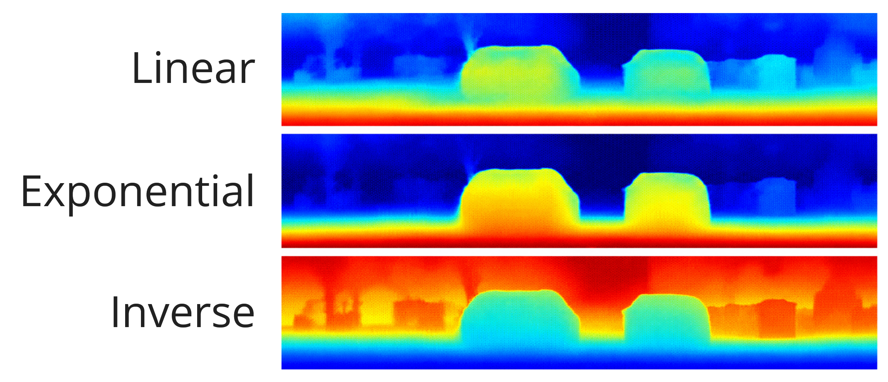
Loss along x-axis [Img.4]
Foveated tokenization is applied at two distinct stages of the pipeline to tackle the computational bottleneck of the uniform feature extraction process: first at the level of 3D feature extraction in the voxel backbone, and second at the level of cross-attention with stereo image features.
We replace the standard dense 3D backbone with a two-stream design combining different resolutions. Given the full voxel feature volume of shape $(B, C, V_H, V_W, V_Z)$, two parallel forward passes are computed:
The outputs are merged by upsampling the global feature map back to full resolution via nearest-neighbour interpolation, then overwriting the foveal region with the high-resolution foveal features. The result is a complete $(B, C, V_H, V_W, V_Z)$ feature map in which the central foveal zone retains full-resolution features while the periphery carries coarser, pooled features. Because the 3D backbone weights are shared across both streams, no additional parameters are introduced. This design reduces backbone FLOPs from approximately 687 GFLOPs (dense) to approximately 142 GFLOPs, a 4.8× reduction. (Note: All theoretical FLOPs computations presented in this report were computed using a custom script available in our code repository.)
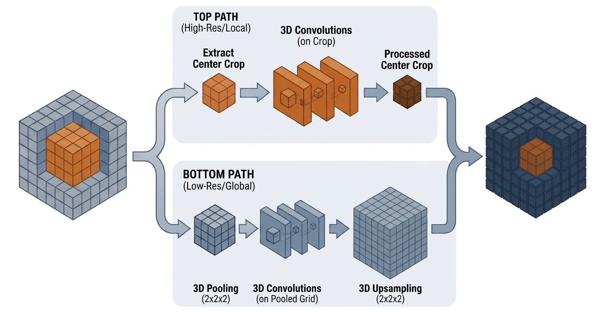
The second application occurs inside the cross-attention module, which lifts image features into the voxel grid. Without foveation, every non-masked voxel in the grid is used as a separate query token, which is expensive for large volumes. With foveated tokenization, the set of active voxel queries is instead partitioned into three concentric zones defined by their $L_\infty$ (Chebyshev) distance from the same fixation point used in Part 1:
After cross-attention, peripheral and mid-zone block features are scattered back to all member voxels within each block. This reduces the number of transformer queries proportionally to the pooling strides, lowering the attention cost significantly while concentrating computational budget on the foveal region where spatial precision matters most. This part reduces cross-attention FLOPs from approximately 249 GFLOPs (dense) to approximately 34 GFLOPs, a 7.4× reduction.
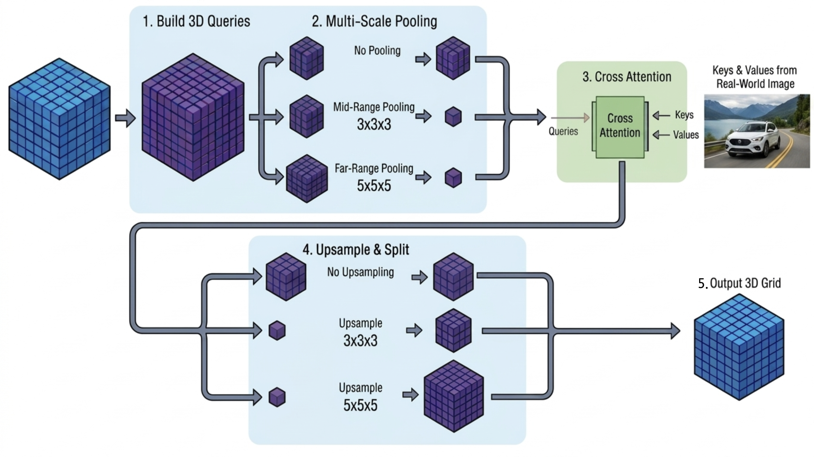
Together, the two parts form a coherent non-uniform representation: Part 1 ensures the 3D backbone produces richer features in the foveal zone, and Part 2 ensures the cross-attention head devotes proportionally more query capacity to that same zone.
To characterise model performance, we report inference time as an efficiency metric and use Intersection over Union (IoU) and mean IoU (mIoU) to quantify predictive quality. For occupancy (occupied vs. empty), IoU measures the overlap between predicted and ground-truth voxels:
\[ \mathrm{IoU}=\frac{\mathrm{TP}}{\mathrm{TP}+\mathrm{FP}+\mathrm{FN}} \]
mIoU is the arithmetic mean of the per-class IoUs and provides an overall semantic-performance score that prevents very frequent classes from dominating the result.
We first evaluated the effect of the distance-based loss. Compared to the baseline loss, the distance-weighted variants slightly improve the validation IoU. The gains are modest, but they show that giving more importance to closer voxels can have a positive effect on occupancy prediction. Among the tested variants, the linear distance-based loss gives the best mIoU while remaining simple and stable, so we selected it for the rest of the experiments.
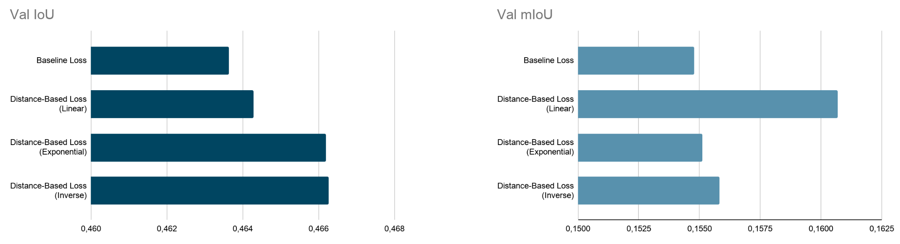
Comparison of the baseline loss with linear, exponential, and inverse distance-based losses
We then performed an ablation study to measure the impact of each foveation component. The voxel-only setting corresponds to applying foveation in the voxel feature extraction stage, while the query-only setting applies token reduction only during the cross-attention stage. The full foveation setting combines both mechanisms.
The results show that query reduction alone has almost no effect on inference time. In contrast, voxel-only foveation provides the best efficiency gain, reducing inference time by about 30% while keeping the drop in IoU below 3%. When query reduction is combined with voxel reduction, the performance becomes worse than with voxel-only foveation, so the best trade-off is obtained with the voxel-only configuration.
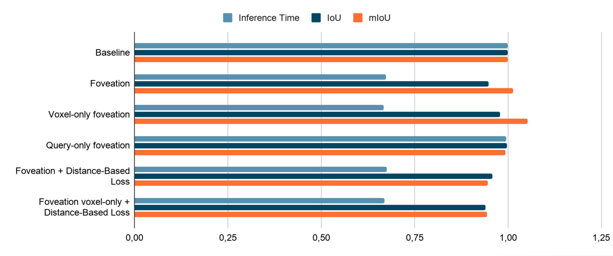
Ablation study comparing baseline, foveation, voxel-only foveation, query-only foveation, and variants with distance-based loss
The table below compares the baseline with the different foveation variants using validation IoU, validation mIoU, and inference time.
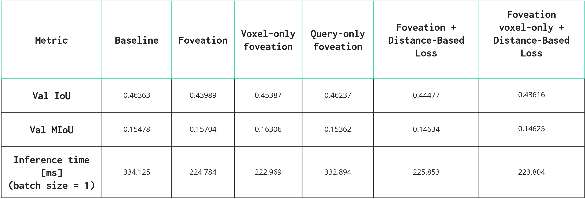
The table below reports normalized performance and efficiency scores. Higher efficiency means a better trade-off between prediction quality and inference time.
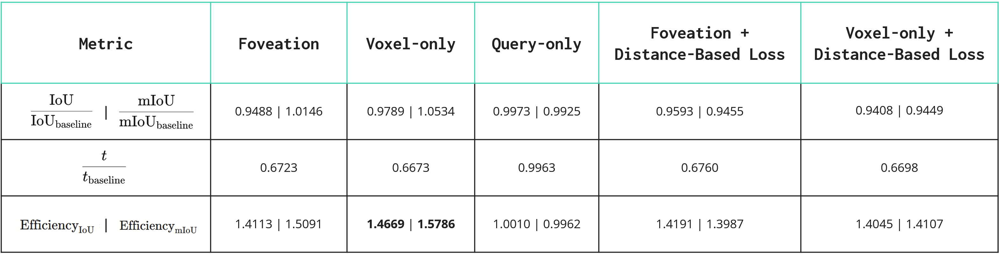
The efficiency scores are computed as the normalized prediction quality divided by the normalized inference time:
\[ \mathrm{Efficiency}_{IoU} = \frac{\mathrm{IoU}/\mathrm{IoU}_{baseline}} {t/t_{baseline}}, \qquad \mathrm{Efficiency}_{mIoU} = \frac{\mathrm{mIoU}/\mathrm{mIoU}_{baseline}} {t/t_{baseline}} \]
The efficiency plot confirms that voxel-only foveation gives the best overall trade-off between prediction quality and inference time. Query-only foveation stays close to the baseline in terms of runtime, which explains its lower efficiency.
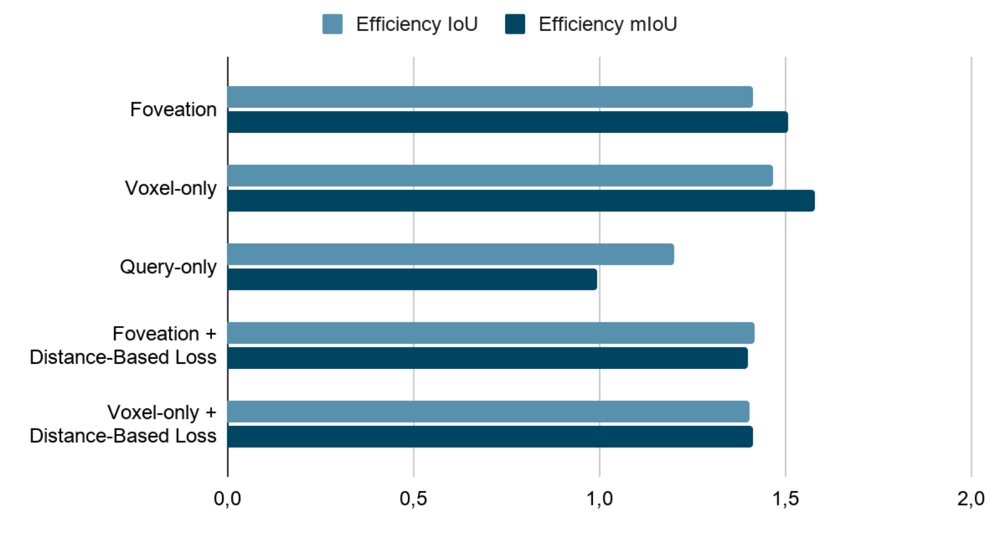
The ablation study revealed an interesting behavior: query-only foveation did not significantly decrease overall inference time. We can explain this discrepancy by analyzing the theoretical floating-point operations (FLOPs) of the respective network components.
In the dense baseline, the entire network pipeline requires approximately 1132 GFLOPs. The cross-attention module (the stage where query reduction is applied) accounts for roughly 249 GFLOPs. Meanwhile, the 3D voxel feature extractor (the stage where voxel reduction is applied) consumes about 687 GFLOPs.
Applying query reduction alone cuts the cross-attention operations by ~11.3×, saving around 215 GFLOPs (which is only a ~19% reduction of the total 1132 GFLOP pipeline). On the other hand, voxel reduction cuts the heavily parameterized 3D backbone operations by ~4.8×, saving roughly 545 GFLOPs (a ~48% reduction of the total pipeline). This fundamental disparity in computational bottlenecks confirms why voxel-only foveation yields a much more noticeable 30% empirical impact on the measured inference time.
Furthermore, while the theoretical FLOPs for the total pipeline decreased by a factor of 3.0× (from 1131.6 GFLOPs to 371.8 GFLOPs) in the combined setting, our measured wall-clock inference time only decreased by roughly 30%. This gap between theoretical and empirical efficiency is common in PyTorch due to memory bandwidth constraints, unoptimized memory reads, and CUDA kernel overheads preventing a perfectly linear speedup.
Combining our distance-based loss with the foveation mechanisms resulted in degraded performance. This is highly likely because the model already struggles to accurately predict distant regions due to the reduced spatial resolution enforced by foveation. Applying a linear distance-based loss that down-weights these exact same distant voxels compounds the difficulty, effectively removing the gradient incentive for the optimizer to learn robust representations for them.
Additionally, combining voxel and query foveation performed worse than voxel-only foveation. This compound degradation likely occurs because foveating the 3D backbone already compresses the spatial representation into a coarser latent state in the periphery. Passing this already-fragile peripheral representation through a second heavy compression bottleneck (query pooling) destroys too much critical geometric information, leading to a measurable drop in accuracy.
Our experiments demonstrate that foveated processing can successfully optimize the efficiency of 3D occupancy prediction models. By implementing a voxel-only foveation strategy, we achieved a ~30% reduction in inference time while maintaining the intersection-over-union (IoU) drop strictly below 3%. This validates our core hypothesis: allocating high-resolution processing to safety-critical, central regions while utilizing coarser representations for the periphery significantly cuts unnecessary computation without severely sacrificing vital spatial awareness.
Moving forward, we identify several key directions to expand upon this framework:
Here you can see possible visualizations that can be used in this website
Add a short description for the first video/image.
Add a short description for the second video/image.
References and citations cited in the Related Works section are listed below.
L. Yiming, Y. Zhiding, C. Christopher et al. (2023). Voxformer: Sparse voxel transformer for camera-based 3d semantic scene completion. https://arxiv.org/abs/2302.12251
A. Bucci, M. Büttner, N. Domdei et al. (2025). Synchronization of visual perception within the human fovea https://www.nature.com/articles/s41593-025-02011-3.
W. Li, Z. Yu, and A. Alahi (2025). Voxdet: Rethinking 3d semantic occupancy prediction as dense object detection. https://arxiv.org/abs/2506.04623
A. Jonnalagadda, W. Yang Wang, B. S. Manjunath, and M. P. Eckstein (2022). Foveater: Foveated transformer for image classification. https://arxiv.org/abs/2105.14173.
M. Fayyaz, S. A. Koohpayegani, F. R. Jafari et al. (2022). Adaptive token sampling for efficient vision transformers. https://arxiv.org/abs/2111.15667
Z. Yu, Z. Zhang, J. Ying et al. (2024). Context and geometry aware voxel transformer for semantic scene completion. https://arxiv.org/abs/2405.13675
J. Behley, M. Garbade, A. Milioto, J. Quenzel, S. Behnke, C. Stachniss, and J. Gall (2019). SemanticKITTI: A Dataset for Semantic Scene Understanding of LiDAR Sequences. https://arxiv.org/abs/1904.01416
A. Geiger, P. Lenz, and R. Urtasun (2012). Are we ready for autonomous driving? The KITTI Vision Benchmark Suite. https://www.cvlibs.net/publications/Geiger2012CVPR.pdf
The images from external sources are listed below.